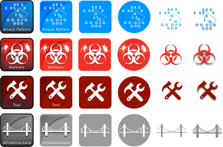
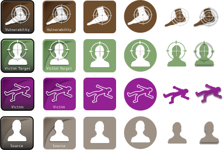
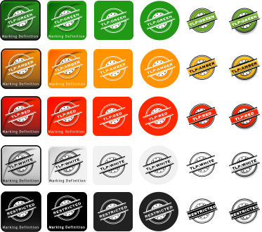
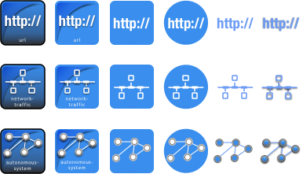
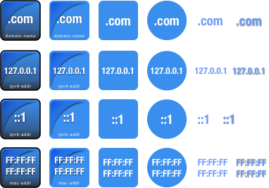

STIX2 Adversary Icons
STIX2 TTP Icons
STIX2 IR Icons
STIX2 Targeting Icons
STIX2 Meta Data Icons
STIX2 Relationship Icons
STIX2 Marking Icons
License
All graphics in this repo are licensed under the Creative Commons Attribution-ShareAlike (CC BY-SA) License, Version 4.0. See the GitHub repo that holds the originals for the License file.
Copyright
Copyright 2016 Bret Jordan, All rights reserved.
All of these objects are avaliable in the following formats:
STIX2 Adversary Icons |
 STIX2 TTP Icons |
STIX2 IR Icons |
 STIX2 Targeting Icons |
STIX2 Meta Data Icons |
STIX2 Relationship Icons |
|  STIX2 Marking Icons |
|  STIX2 SCO Network Address Icons |
 STIX2 SCO Network Traffic Icons |
STIX2 SCO Account and Email Icons |